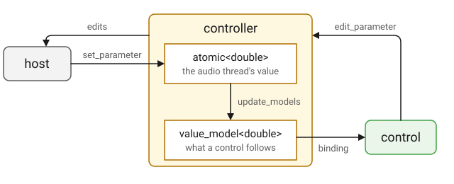

Controller
Overview
A controller declares a plugin’s parameters. The controller base class
holds every value, reads it back as the type the parameter was declared
with, passes the edits made in the editor on to the host, writes and reads
the state, and keeps the plugin’s presets. This is the whole of the gain
example’s controller:
#include <q_plug/controller.hpp>
...
namespace q_plug = cycfi::q_plug;
...
class gain_controller : public q_plug::controller
{
public:
using decibel = cycfi::q::decibel;
enum { volume_id };
// The fader runs from silence, the 24 bit floor, up to +10 dB.
static constexpr decibel silence = cycfi::q::dB(-144.0);
static constexpr decibel max_volume = cycfi::q::dB(10.0);
parameter_list parameters() const override;
decibel volume() const;
parameter const& volume_param() const;
};parameters() is the one function a controller must write. The rest is the
plugin’s own: an enum of the parameter indices, and an accessor per
parameter that reads the value back as a decibel.
A Parameter, Held Twice

Every declared parameter is held as an atomic double, which the audio
thread reads and writes without waiting, and as an Elements
value_model<double>, which a control links to. Both start at the
parameter’s initial value.
When the host moves a parameter, the value lands in the atomic through
set_parameter, and the adapter requests a main-thread callback from the
host. There, update_models brings the models up to date, and the controls
follow. It assigns only the models whose value has changed: a model
assignment always notifies, and assigning every model would redraw the
whole editor on every callback and move a control the user is dragging to
a value the host echoes back.
The other direction starts in the editor. A control’s binding calls
edit_parameter, which stores the atomic, sets the model and passes the
edit on to the edit_sink the plugin installed. The sink queues the edit
for the host, and the audio thread drains the queue without blocking, so
an edit never holds up either side.
A parameter is addressed by its index in the list parameters() returns.
The id belongs to the host and to the state; the adapter translates between
the two. See parameter.
From the Audio Thread
The processor runs on the audio thread, where it may read the parameters but not edit them: edits reach the host from the main thread. When the processor needs the controller to act, it posts a task, and the task runs on the main thread soon after. A sampler that has played its sample to the end turns its own Play button off this way:
// In the processor's process, on the audio thread.
auto ctl = &_ctl;
_ctl.post([ctl]
{
ctl->begin_edit(play_id);
ctl->edit_parameter(play_id, false);
ctl->end_edit(play_id);
});A task is a lambda that captures pointers and plain values, as Q’s tasks defines one, so posting it never allocates or locks. It runs on the main thread, where the whole controller is safe to use. The edit then reaches the host as an edit from the editor does, and the control follows it.
A task can also be posted with a delay, in audio time: two seconds is two seconds of sound processed. The delay stands still while the host is not processing, and an offline render keeps the timing. A delayed task runs within a block of its time, plus however long the host takes to call the plugin on the main thread.
State
The state is one JSON object, the same whether the host is saving a session or the plugin is saving a preset:
{
"plugin": "com.qplug.delay",
"version": 1,
"params": [
{"id": 1, "name": "Delay", "value": 0.35},
{"id": 2, "name": "Feedback", "value": 50.0}
],
"view": {"scale": 1.0},
"preset": {"name": "Slapback", "edited": false}
}plugin is info().id and keeps a state written by another plugin out.
version is info().state_version, so a plugin can distinguish an old layout of
its values from the current one. A state written by a later version than
the plugin’s own is refused.
params carries every parameter. A value is found by id, and failing that
by name, so a plugin may add, remove, reorder or rename its parameters and
an old state still loads. An entry the plugin no longer has is skipped,
and a parameter the state does not carry takes its default. Values are
clamped into the parameter’s range on the way in.
view holds the editor’s zoom and preset the preset the panel shows.
Both belong to the session: save_preset leaves them out of a preset,
together with the parameters marked dont_save.
Presets
A preset is a named state. Factory presets come with the plugin, in
factory_presets.json among its resources; user presets live in a
presets.json of the user’s own, in a directory named after the plugin’s
vendor and name:
- macOS
-
~/Library/Application Support/<vendor>/<name> - Windows
-
%APPDATA%\<vendor>\<name> - Linux
-
$XDG_CONFIG_HOME/<vendor>/<name>, or~/.config/<vendor>/<name>
Both files are one JSON object of preset name to state, and both are read on first use, so a plugin with no presets pays nothing. Presets keep their files' order: the factory ones as the plugin lists them (a cartridge’s 32 voices in the cartridge’s order), and the user’s in the order they were added, a new one at the end.
save_preset refuses the name of a factory preset. Only user presets can
be saved or deleted.
The preset shown is the name the state was last loaded from or saved as, and whether any parameter has moved since, by the panel or by the host. Both ride in the state, so a session comes back showing what it was saved with. Naming a preset starts it unedited, and a preset file carries neither.
The standard header along the top of the editor lists the presets, loads
the one chosen, saves and deletes, and shows the current name with a *
when it has been edited, all through the controller.
Design Rationale
Factory Preset Names
The names the plugin ships are the plugin’s. save_preset refuses one,
rather than leave a preset that loads as the user’s while the list calls it
factory and nothing in the editor will delete it.
Loading a Preset Is an Edit
Taking the state alone would only set the values, which is right when it is
the host that is loading, but a preset chosen in the editor is the plugin’s
own edit: unannounced, the host’s automation would still hold the values the
preset replaced. So load_preset passes every loaded value on to the host as
an edit.
Declaration
struct edit_sink
{
virtual ~edit_sink() = default;
virtual void begin_edit(int index) = 0;
virtual void edit_parameter(int index, double value) = 0;
virtual void end_edit(int index) = 0;
virtual void request_callback() {}
};
class controller
{
public:
using parameter = cycfi::q_plug::parameter;
using parameter_list = iterator_range<parameter const*>;
using name_list = std::vector<std::string>;
using model_type = elements::value_model<double>;
using json = nlohmann::json;
using named_state = std::pair<std::string, json>;
using named_states = std::vector<named_state>;
using duration = cycfi::q::duration;
controller();
virtual ~controller();
virtual parameter_list parameters() const = 0;
virtual double get_parameter(int index) const;
model_type& model(int index);
template <typename T>
T get_parameter(int index) const;
virtual void set_parameter(int index, double value);
std::uint32_t changes() const;
template <typename T>
void set_parameter(int index, T value);
void update_models();
void begin_edit(int index);
virtual void edit_parameter(int index, double value);
void end_edit(int index);
template <typename T>
void edit_parameter(int index, T value);
template <typename F>
bool post(F&& f);
template <typename F>
bool post(duration delay, F&& f);
int index_of(parameter::id_type id) const;
int index_of(std::string_view name) const;
json state() const;
bool state(json const& j);
bool save_state(byte_ostream& out) const;
bool load_state(byte_istream& in);
float view_scale() const;
void view_scale(float s);
std::string const& preset_name() const;
void preset_name(std::string name);
bool preset_edited() const;
void preset_edited(bool e);
name_list preset_names() const;
bool has_preset(std::string_view name) const;
bool is_factory_preset(std::string_view name) const;
bool load_preset(std::string_view name);
bool save_preset(std::string_view name);
bool delete_preset(std::string_view name);
bool add_presets(named_states const& states);
protected:
virtual void save_extra(json& j) const;
virtual void load_extra(json const& j, std::uint32_t version);
void init(edit_sink& s);
};
using controller_ptr = std::unique_ptr<controller>;Client Interface
The controller is a base class, meant to be derived from and not
instantiated directly. The client writes a class derived from controller,
overrides parameters() to declare the plugin’s parameters, and returns an
instance of it from make_controller() (see Plugin Entry Points). The other
overrides are optional.
parameter_list parameters() const override;-
Return the plugin’s parameters, in order. Required. The list is fixed for the life of the plugin, so it is returned from a static array.
void set_parameter(int index, double value) override;-
React to a change of a parameter by the host, a state or a preset, and call the base. Called on the audio thread while the plugin is processing, so it must not block or allocate there.
void edit_parameter(int index, double value) override;-
React to an edit made in the editor, on the main thread, and call the base, which sets the value and passes the edit on to the host.
void save_extra(json& j) const override;-
Add to the state
jwhat the plugin keeps besides its parameters. Called on the main thread at the end ofstate(). Empty in the base. void load_extra(json const& j, std::uint32_t version) override;-
Read back from
jwhatsave_extraadded, givenversion, thestate_versionthe state was written with. Called on the main thread after the parameters are set and before the models are updated. Empty in the base. void init(edit_sink& s);-
Install
sas the destination of the edits, and size and seed the parameters fromparameters(). Not virtual. The plugin calls it once, on the main thread, before anything else runs. A test that uses a controller without a plugin calls it from the derived class.
The index of a parameter in the list parameters() returns is how the
plugin’s own code addresses it, and the enum of those indices belongs next
to the array, as in the Example.
| An id is a parameter’s identity for the life of the plugin: it is never reused or renumbered, and a retired id stays unused. Once a parameter is retired, the indices in the enum and the ids no longer match. |
A plugin overrides set_parameter to react to every change, and
edit_parameter to react only to the edits made in the editor.
save_extra and load_extra are for what is not a parameter: everything a
parameter covers is already saved. The keys plugin, version, params,
view and preset are reserved.
Expressions
Notation
ctl-
Object of a type derived from
controller. index-
intvalue, the index of a parameter inctl.parameters(). id-
Object of type
parameter::id_type. name-
Object of type
std::string, a parameter’s or a preset’s name. v-
doublevalue, in the parameter’s units. T-
A type
parameter_traitsis specialized for. val-
Object of type
T. j-
Object of type
controller::json. out-
Object of a type derived from
byte_ostream. in-
Object of a type derived from
byte_istream. s-
Floating point value for the editor’s scale.
e-
boolvalue. states-
Object of type
controller::named_states: preset names, each with a state asctl.state()returns it. f-
A trivially copyable, trivially destructible callable, invocable as
f(): a tasks task. d-
Object of type
controller::duration.
Accessors
| Expression | Semantics | Return Type |
|---|---|---|
|
Get the plugin’s parameters, in order. |
|
|
Get the value of the parameter at
|
|
|
Get the value of the parameter at
|
|
|
Get the model of the parameter at
|
|
|
Get the count of value changes of
the parameters not marked |
|
|
Get the index of the parameter
with this |
|
|
Get the index of the parameter
named |
|
|
Get the state as JSON. |
|
|
Get the editor’s scale, 1 for the size the plugin declares. |
|
|
Get the name of the preset the panel shows. |
|
|
Get whether a parameter has moved since the preset was named. |
|
|
Get every preset’s name: the factory ones first, then the user’s, each in its file’s order. |
|
|
Get whether there is a preset
named |
|
|
Get whether the plugin ships a
factory preset named |
|
get_parameter and changes, with set_parameter below, work on atomics
and never wait, so the audio thread may call them. The other functions are
for the main thread.
changes moves whenever a parameter not marked live changes value.
Setting a parameter to the value it already holds is no change. Before
each run of frames, the plugin compares the count with the one it last saw
and calls the processor's parameters_changed when it has moved.
get_parameter<T> returns the value as the type the parameter was
declared with. A controller usually wraps each one in an accessor of its
own, as anna_5 does:
#include <q_plug/controller.hpp>
...
namespace q_plug = cycfi::q_plug;
namespace q = cycfi::q;
class anna_controller : public q_plug::controller
{
public:
enum { cutoff_id, chorus_mix_id };
q::frequency cutoff() const;
double chorus_mix() const; // 0 to 1
...
};
...
inline q::frequency anna_controller::cutoff() const
{
return get_parameter<q::frequency>(cutoff_id);
}A Debug build asserts that T matches the kind the parameter was declared
with. Where a parameter’s units and the plugin’s differ, the accessor
converts:
inline double anna_controller::chorus_mix() const
{
return get_parameter<double>(chorus_mix_id) / 100.0;
}Mutators
| Expression | Semantics | Return Type |
|---|---|---|
|
Set the value of the parameter
at |
|
|
Set the value of the parameter
at |
|
|
Set the editor’s scale. |
|
|
Set the name of the preset the panel shows, unedited. |
|
|
Set whether the preset is marked edited. |
|
The host’s changes arrive through set_parameter, on the audio thread
while the plugin is processing. Loading a state or a preset goes through it
too, on the main thread.
A control follows its model. A plugin that moves a parameter itself,
outside an edit, calls update_models for the editor to show the new
value.
|
Operation
| Expression | Semantics | Return Type |
|---|---|---|
|
Update the models whose value has changed, and the editor with them. |
|
|
Start a gesture on the
parameter at |
|
|
Set the value and the model of
the parameter at |
|
|
Set the value and the model of
the parameter at |
|
|
End the gesture on the
parameter at |
|
|
Run |
|
|
Run |
|
|
Load the state in |
|
|
Write the state to |
|
|
Read a state from |
|
|
Load the preset named |
|
|
Save the state as the user
preset |
|
|
Delete the user preset |
|
|
Add |
|
Call post from the audio thread, from the processor: one thread
posts to a controller. The tasks waiting share 4 KB.
|
update_models is called on the main thread after the host has changed
anything, and by state once a state is loaded. It assigns only the
models whose value has changed.
The editor changes a parameter through begin_edit, edit_parameter and
end_edit, on the main thread. A presenter's bind calls all three: the
gesture calls bracket a drag, so the host records it as one move, and
edit_parameter carries each value as the control passes through it. A
plugin binds its controls and does not call these itself.
The edits go to the edit_sink installed by init. In a plugin that is
plugin, which queues them; the audio thread passes them on to the host
without waiting, so the editor never blocks on the host.
The host calls save_state and load_state through the adapter, which
wraps the host’s own stream as a byte_ostream or byte_istream (see
Data Streams). A plugin calls them only to save or load a state outside a
host, in a test or a tool.
A refused state changes nothing. A state that is loaded sets every
parameter, those it carries and those it does not, then the zoom and the
preset, then calls load_extra and update_models.
A state without view leaves the zoom where it is. A state without
preset clears the preset name.
|
load_preset passes every loaded value on to the host as an edit, so the
host’s automation follows the preset. state(j) only sets the values,
as when the host loads a session.
save_preset leaves the preset name as it is. The caller names the
preset when the panel should show it, as the header’s Save Preset As
dialog does:
if (ctl.save_preset(name))
ctl.preset_name(name);add_presets adds many states with one write: a synth that imports a
cartridge of 32 voices adds them at once, and they appear in the menu in
the order given. A user preset of the same name is replaced. A factory
preset’s name is skipped.
A user file written before save_preset refused factory names may
still hold one that shadows a factory preset. load_preset takes the
factory one, which is the preset preset_names lists under that name.
The shadowed entry stays in the file and no longer loads.
|
Example
Declare the controller of a delay plugin with two parameters, and read them back in the plugin’s own units:
namespace q = cycfi::q;
namespace q_plug = cycfi::q_plug;
using namespace q::literals;
class delay_controller : public q_plug::controller (1)
{
public:
enum { delay_id, feedback_id };
parameter_list parameters() const override (2)
{
static parameter params[] =
{
parameter{1, "Delay", 350_ms}.range(0.0, 1.0),
parameter{2, "Feedback", 50.0}.range(0.0, 100.0).unit("%")
};
return {params};
}
q::duration delay() const
{
return get_parameter<q::duration>(delay_id); (3)
}
double feedback() const
{
return get_parameter<double>(feedback_id) / 100.0; (4)
}
};| 1 | Derive the plugin’s controller from controller. |
| 2 | Declare the parameters, in the order of the enum: a delay of 0 to 1 second, and a feedback of 0 to 100 percent. |
| 3 | Read the delay back as a q::duration, the type it was declared with. |
| 4 | Read the feedback in percent and convert it to a fraction. |
See Client Interface for more info.
Implementation Details
| Implementation details are subject to change without notice. Rely only on the expressions above. |
The controller holds a Q audio_clock and a q::basic_tasks timed on
it. The plugin sets the clock’s sample rate in activate, and advances it
in process by the frames of each block.
Every post calls the host’s request_callback, so the plugin’s
main-thread callback polls the tasks soon after, and a delayed task is
seen there before it comes due. At each block the plugin compares the
clock with the earliest delayed task waiting, and calls request_callback
once that task comes due. Nothing runs on a timer. The main-thread
callback polls the tasks before it updates the models, so the models take
up any edits the tasks make.